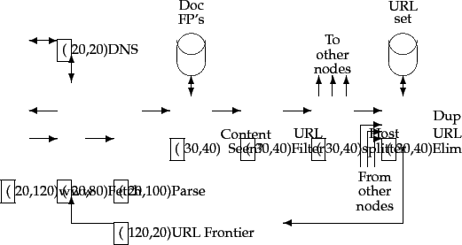

Next: DNS resolution
Up: Crawler architecture
Previous: Crawler architecture
Contents
Index
We have mentioned that the threads in a crawler could run under different processes, each at a different node of a distributed crawling system. Such distribution is essential for scaling; it can also be of use in a geographically distributed crawler system where each node crawls hosts ``near'' it. Partitioning the hosts being crawled amongst the crawler nodes can be done by a hash function, or by some more specifically tailored policy. For instance, we may locate a crawler node in Europe to focus on European domains, although this is not dependable for several reasons - the routes that packets take through the internet do not always reflect geographic proximity, and in any case the domain of a host does not always reflect its physical location.
How do the various nodes of a distributed crawler communicate and share URLs? The idea is to replicate the flow of Figure 20.1 at each node, with one essential difference: following the URL filter, we use a host splitter to dispatch each surviving URL to the crawler node responsible for the URL; thus the set of hosts being crawled is partitioned among the nodes. This modified flow is shown in Figure 20.2 . The output of the host splitter goes into the Duplicate URL Eliminator block of each other node in the distributed system.
The ``Content Seen?'' module in the distributed architecture of Figure 20.2 is, however, complicated by several factors:
- Unlike the URL frontier and the duplicate
elimination module, document fingerprints/shingles cannot
be partitioned based on host name. There is nothing
preventing the same (or highly similar) content from
appearing on different web servers. Consequently, the set
of fingerprints/shingles must be partitioned across the nodes based on some property of the fingerprint/shingle (say by taking the fingerprint modulo the number of nodes). The result of this locality-mismatch is that most ``Content Seen?'' tests result in a remote procedure call (although it is possible to batch lookup requests).
- There is very little locality in the stream of document fingerprints/shingles. Thus, caching popular fingerprints does not help (since there are no popular fingerprints).
- Documents change over time and so, in the context of continuous crawling, we must be able to delete their outdated fingerprints/shingles from the content-seen set(s). In order to do so, it is necessary to save the fingerprint/shingle of the document in the URL frontier, along with the URL itself.
Figure 20.2:
Distributing the basic crawl architecture.
|  |
Next: DNS resolution
Up: Crawler architecture
Previous: Crawler architecture
Contents
Index
© 2008 Cambridge University Press
This is an automatically generated page. In case of formatting errors you may want to look at the PDF edition of the book.
2009-04-07